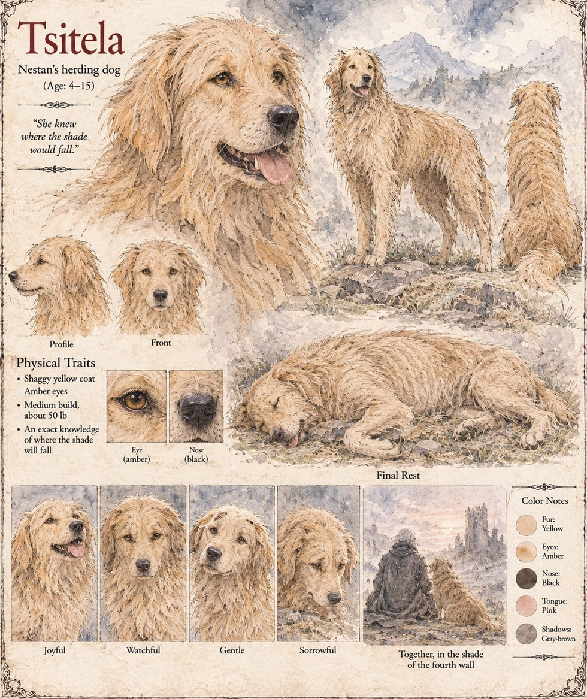

Tsitela
Nestan’s herding dog · shaggy yellow bitch of no known ancestry · aged fifteen at her death
A shaggy yellow herding bitch of no known ancestry, Nestan’s dog, whose chief talent was an exact knowledge of where the shade would fall at any hour of any day. She and the nine-year-old girl are the only creatures in Ormeli who had not yet learned to be afraid of the sky. On the second evening of the lame fletcher’s three nights in the valley she lies across his feet, holding no opinion on whether the valley has decided he is a saint or a spy; he will remember it later, in a form that did not fit any field either.
In the third summer of the drought the highest terrace of Ormeli has died thoroughly, the barley in rows of grey straw on a floor of cracked clay that rings under a heel like a plate. Nestan climbs to it because Tsitela climbs to it, the dog having found, with her usual instinct for the geometry of shade, that the one shadow left in the valley at that hour falls from the retaining wall of the fourth terrace. The two settle in it, the girl cross-legged with the bow across her knees and the dog flat on her side with her tongue out and her ribs going like a bellows. It was the dog’s breathing that Nestan watched, and the wish is a rain for Tsitela. It rains on four terraces and one girl and on one dog, who rose in astonishment and then lay down again in the wet with an expression of private vindication.
Tsitela dies at fifteen, when Nestan is twenty, of nothing but age, on the highest terrace in the shade of the fourth wall where she had lain on the first afternoon. Ketevan digs the grave alone, with a mattock, in clay that had once rung like a plate, and enters the loss that night in the third column of the ledger, under Lost, in her smallest hand: Tsitela, aged fifteen. She does not write a figure. Some accounts are not kept in figures. Nestan keeps a clay bowl filled at the tower gate every dawn from that year for any dog in the valley that cares to come for it, and on the last afternoon of her life, in the shade of the Hall’s north wall, thinks of Tsitela first.
The manuscript gives her yellow, shaggy coat and unknown ancestry, her talent, her fifteen years, the shade of the fourth wall and the grave. The sheet’s age range of 4 to 15 (the arithmetic of the girl’s nine and twenty), amber eyes, black nose, medium build of about 50 lb and the panels Joyful, Watchful, Gentle and Sorrowful are its own, along with its portrait Final Rest. Its scene Together, in the shade of the fourth wall follows the manuscript, and the line it prints, She knew where the shade would fall., is the sheet’s own condensation of the manuscript’s sentence.
“an exact knowledge of where the shade would fall at any hour of any day”